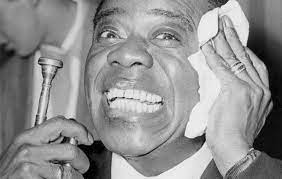

Things you may not know about Louis Armstrong
Musical Training while in Juvenile Detention.
Armstrong spent his youth singing on the street for spare change, but he didn’t receive any formal musical training until age 11,
when he was arrested for firing a pistol in the street during a New Year’s Eve celebration.
The crime earned him a stint in a detention facility called the Colored Waif’s Home for Boys,
and it was there that Armstrong claimed, “me and music got married.”
He spent his 18-month sentence learning how to play bugle and cornet from the Waif’s Home’s music teacher, Peter Davis,
and eventually became a star performer in its brass band.
At age 62, Armstrong surpassed The Beatles at the top of the pop charts.
In late-1963, Armstrong and his All Stars recorded the title track for an upcoming musical called “Hello, Dolly!”
The trumpeter didn’t expect much from the tune, but when the show debuted on Broadway the following year,
it became a runaway hit.
By May, “Hello Dolly!” had soared to the top of the charts,
displacing two songs by The Beatles, who were then at the height of their popularity.
At age 62, Armstrong became the oldest musician in American history to have a number one song.